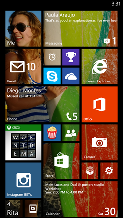

-
Creación de HTML
1980 📅
En 1980 Sir Tim Berners-Lee inicia la creación del concepto que en 1990, casi 1991 se lanzaría como HyperText Markup Language (HTML). Consta de varios tags que definen la estructura de una página web con alta personalización. Hoy en día el lenguaje ha seguido evolucionando a un estándar viviente

-
Creación de CSS
1994 📅
Propuesto el 10 de Octubre de 1994 por Håkon Wium Lie, quien colaboraba con Sit Tim Berners-Lee, Cascading Style Sheet se convertiría en un lenguaje que ayudaría a definir la presentación y color de una página HTML. Eventualmente el lenguaje se convertiría en estándar con soporte para varios otros lenguajes.

-
JavaScript
1995 📅
Para poder consolidar la capacidad de Netscape, la empresa Sun Microsystems y Netscape contratan a Brendan Eich para desarrollar un nuevo lenguaje que se convertiría en JavaScript (JS), el cual salío oficialmente en diciembre de 1995. Este lenguaje maneja el comportamiento de una página web, la cual se combinaría con HMTL y CSS para convertirse en los 3 pilares principales de las tecnologías web.

-
Android
2003 📅
En 2003, Nick Sears, Chris White, Andy Rubin y Rick Miner fundan Android Inc. Esta empresa tenía un enfoque principal de desarrollar el potencial de los dispositivos móviles. Con bases a querer desarrollar un Sistema Operativo que maneja los diferentes dispositivos que puede tener un móvil. Eventualmente, este sistema operativo, basado en el kernel de Linux, se lanzaría en 2008 y se convertiría en uno de los sistemas operativos más populares para dispositivos móviles.
-
IOS
2007 📅
En enero de 2009, se anunció el iPhone OS (iOS), el cual fue desarrollado por Scott Forstall. Este sistema operativo se lanzó el junio del mismo año, con posibilidad de que desarrolladores web crearan aplicaciones web que funcionarían en el móvil mediante el navegador web Safari, además de contar con una tienda de aplicaciones nativa
-
PhoneGap
2008 📅
Desarrollado por Nitobi software en un campamento de desarrollo en 2008, PhoneGap se creó cómo un framework para desarrollo de aplicaciones para apple. En 2011 Adobe compró a Nitobi y el proyecto evolucionaría a Apache Cordova, y fue descontinuado en 2020
-
Angular
2010 📅
En 2010 Google desarolla Angular como un reemplazo de AngularJS, el cual se lanzaría oficialmente en 14/9/2016. Esta versión de Angular era tan diferente de su versión previa que fue muy controversial entre los desarrolladores que la usaban. Tras este lanzamiento, Angular ha seguido siendo desarrollado por Google y actualmente se encuentra en la versión 14

-
Windows Phone
2010 📅
Para poder competir en el mercado móvil, Microsoft creo una línea de teléfonos con un sistema operativo semejante a Windows, el cual se llamaría Windows Phone. Windows Phone llegó a su versión equivalente de Windows 10 antes de ser canelado en 2017. Esto se debia a que aún con sus esfuerzos, el mercado seguía dominado por Android e iOS
 -
Xamarin
2011 📅
Originalmente creada como Mono, una framework de .NET, por Miguel de Icaza y Nat Friedman, este proyecto eventualmente sería apoyado por Xamarin en 16 Mayo 2011, donce el año siguiente lanzarían Xamarin.Mac, un plugin para el MonoDevelop IDE y eventualmente serían adquiridos por Microsoft en 2016
-
Apache Cordova
2011 📅
En 2011, Adobe compraría a Nitobi, desarrolladores de PhoneGap para continuar el proyecto con una nueva identidad, Apache Cordova. Este proyecto se convertiría en un framework para aplicaciones móviles híbridas, utilizando CSS, HTML y JS. Estas aplicaciones pueden usarse en diferentes sistemas operativos móviles y son híbridos, no nativos ni web. -
React
2013 📅
En 2013 Facebook/Meta empezó a desarrollar React como una libreria de JS para frontend e interfaces de usuario. Estas aplicaciones con interfaces habilitadas por React pueden ser móviles, de página única o renderizadas por el servidor. Esta libreria se basa en estados para poder controlar lo que se debe renderizar, evitando demoras y retrasos en la ejecución de la página/aplicación
-
Ionic
2013 📅
Ionic es un kit para desarrollo de aplicaciones híbridas open-source creado por Max Lynch, Ben Sperry y Adam Bradley. Originalmente hecho sobre AngularJS y Cordova, ahora está hecho de componentes web para poder habilitar la implementación de ionic con cualquier otro framework de desarrollo como Angular, React o Vue

-
Swift
2014 📅
Apple, para poder modernizar sus aplicaciones, ya que su lenguaje de programación básico Objective-C no se había adapado a funcionalidades modernas, decidió en 2014 desarrollar un nuevo lenguaje de programación con la ayuda de la comunidad open-source. Este lenguaje fue Swift, que utiliza un compilador con las librerías de Objective-C para poder incluir C, Cpp, Objective-C y Swift en un programa compilado. Este lenguaje se usa para desarollar lenguajes para dispositivos que utilizan sistemas operativos de apple, además de los más comunes como Linux, Windows 10 y Android

-
React Native
2015 📅
React Native es una versión alterna a la plataforma de React. Ambos fueron creados por Facebook/Meta, sin embargo, React Native salió 2 años después de React. Esto se debe a que React Native es una version que tiene soporte para poder utilizar capacidades nativas de las diversas plataformas de desarollo, como Android, Android TV, iOS, macOS, tvOS, entre otros. Esto se hace que no depende React del DOM sino de un puente de datos entre él y el dispositivo
-
Flutter
2017 📅
Flutter es un kit de desarollo de software (SDK) para UI open-source. Fue creado por Google para poder crear aplicaciones multi-plataforma (Android, iOS, Linux, macOS, Windows y web). Se ponderó en 2015 y salió por primera vez en 2017. Ha evolucionado para incluir widgets y soporte para aplicaciones desktop para los sistemas operativos Windows, macOs y Linux, además de APIs mejoradas.